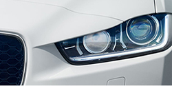
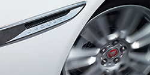
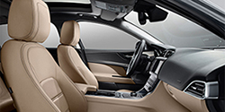

 프런트 LED XE의 J 블레이드 LED로 둘러싸인 헤드램프의 강렬한 시선과 그 위로 부드럽게 이어진 보닛은 어떠한 여정 앞에서도 단호하고 결단력있는 인상을 표출합니다. 시각적으로는 XE만의 역동성을 표현합니다. 프론트 범퍼에서 후면까지 이어진 세련된 곡선의 웨이스트라인은 XE의 강력하고 역동적인 디자인을 완성시킵니다. Jaguar 로고가 새겨진 크롬 사이드 벤트와 사이드 윈도우를 감싸는 디자인 라인은 재규어 다움을 더욱 강조합니다. 외관의 알루미늄 패널은 F-TYPE의 선명하고 정교한 웨이스트라인을 연상하게 합니다.
 에어로다이나믹스 XE의 형태는 공기역학적 효율 및 안정성을 위해 최적화되었습니다. 재규어 역사상 가장 낮은 공기저항계수(0.26Cd)로 연료 소비와 배기가스를 줄입니다. 모든 요소가 익스테리어의 공기역학적 잠재력을 최대로 활용할 수 있는 설계와 더불어 놀라울 만큼 멋진 비율을 유지합니다.공기역학적 성능은 XE 차체 디자인의 핵심 기능으로 0.26Cd의 인상적인 항력계수를 실현했습니다. 레이스카에서 영감을 얻은 하부 보호 및 디퓨저까지도 XE를 최대한 효율적이며 정교한 드라이빙이 가능하도록 설계되었습니다.
 럭셔리패시아 몸을 감싸는 시트에 앉는 순간 운전자와 XE는 하나가 되며, 낮고 안정된 자세를 갖추게 됩니다. 높게 올라온 센터 콘솔이 비행기 조종석 느낌을 더해주고, 계단식 패시아가 우아하게 움직입니다. 모든 컨트롤을 손끝으로 할 수 있습니다. 스타트 버튼을 누르면 XE는 깨어나고 계기판이 품위 있는 인사를 건네며 엔진이 포효를 시작합니다. XE가 깨어나면 재규어드라이브 컨트롤이 살아 있는 듯 운전자를 맞이합니다. 고동치는 심장박동과 함께, XE는 당신과 당신의 차 사이에 감정적 유대감을 형성합니다.